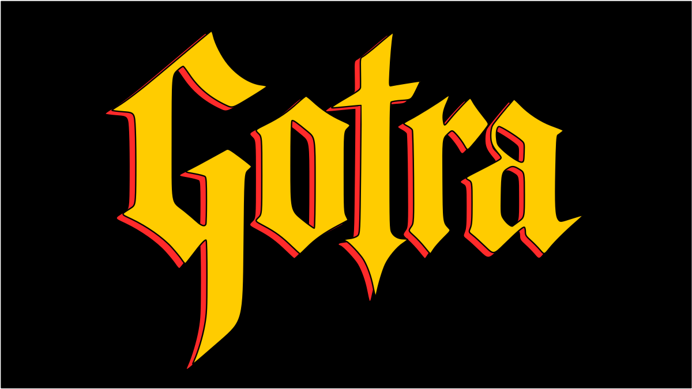

GOTRA - Doom Metal Experimental & Rock Psicodélico
«Hay músicas que buscan escapar del ruido del mundo y otras que prefieren internarse en él hasta encontrar algo al otro lado.»
— Delta80
El Bardo & La Barca
Bardo Thodol & Böcklin
«Muerto al Fin» es, ante todo, un pasaje sónico para dejarse llevar. La música conduce un tránsito inspirado en las lecturas del Libro Tibetano de los Muertos y la pintura La Isla de los Muertos de Arnold Böcklin. A través de la imagen de un cuerpo transportado en una barca, la canción explora la disolución del yo y la impermanencia de todo lo que nos rodea.
"Creo que al final, lo que más me inspiró es la idea de la reencarnación como una reflexión sobre el presente personal y la impermanencia: el hecho de que mañana puede acabarse todo tranquilamente y que el olvido no está mucho más lejos de ahí."— Jules
Prensa
Reseñas & Cobertura de Medios
 Entrevista
Entrevista
Los Colores del Metal
«Entrevista telefónica en vivo en "Los Colores del Metal" (Sonidos FM, Berazategui), conversando sobre el nacimiento de GOTRA, el concepto y el lanzamiento de "Muerto Al Fin".»
Ver Entrevista Entrevista
Entrevista
Delta 80
«"Gotra: la música como territorio de búsqueda". Entrevista en profundidad sobre el proceso creativo de "Muerto Al Fin", la transformación y el esoterismo.»
Leer Artículo Noticias
Noticias
Skorpio Metal
«GOTRA debuta con "Muerto Al Fin", su primer single junto a Javier Rubio de Malón.»
Leer Artículo
NoticiasTNT Radio Rock
«JULES inicia una nueva etapa con GOTRA y presenta el intenso debut de "Muerto Al Fin".»
Leer Artículo
Noticias
Hagamos Ruido, Somos Rock
«Gotra: Metal Psicodélico con "Muerto al Fin" ft. Javier Rubio. El nuevo proyecto de Julián Barabino fusiona doom, esoterismo y rock de los 70.»
Leer Artículo
Noticias
Revista Buff
«GOTRA debuta con "Muerto Al Fin", la nueva apuesta pesada de Julián Barabino.»
Leer Artículo
Noticias
Darkness News
«Gotra presenta el single debut «Muerto al Fin» en colaboración con Javier Rubio (Malón).»
Leer Artículo Reseña
Reseña
Delta 80
«Gotra: doom, psicodelia y esoterismo para atravesar la muerte y volver a despertar. Un nuevo proyecto que cruza la densidad del doom con la psicodelia de los años 70.»
Leer Artículo
Noticias
Metal Argentum
«Julián Barabino oficializó GOTRA, su nueva propuesta que fusiona la densidad del doom, el rock psicodélico de los setenta y una fuerte impronta esotérica.»
Leer ArtículoContacto
Contacto & Prensa
Para ponerte en contacto, completá el siguiente formulario. También podés hacerlo directamente a través de los canales de comunicación abajo: